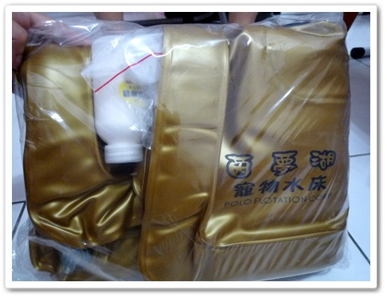
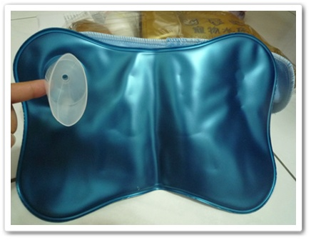
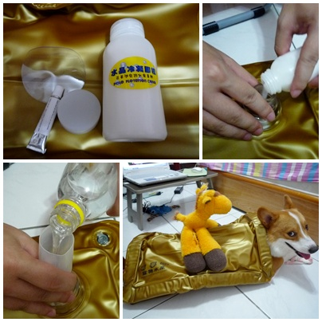
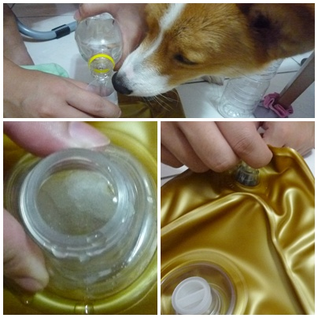
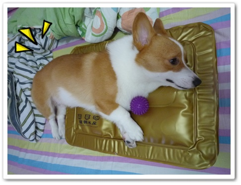
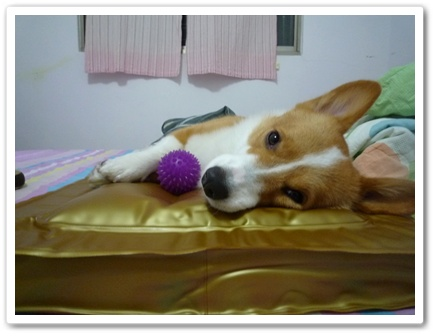

前陣子跟了P麻家的團買了第四代茵夢湖水床
哈哈！P麻速度跟效率都超高的啦!
話說買回來到今天已經使用了半個月嘍！偷懶現在才來分享心得

收到包裹打開來是一個金色的水床，還印上了頗大的LOGO
這次還附送了一個可愛小冰枕

因為摩卡卡非常怕熱，而且我家又是最高樓！白天溫度真的很高！
以前有買過那種普通的水墊，我會拿去冰箱讓它冰涼一點再給卡卡躺
不過有時候冰過頭，拿出來跟退冰沒兩樣，會一直滲出水來！
不拿去冰又覺得不夠涼快，用起來很不方便！

水床組裝很簡單，首先把吹氣口打開它就很會神奇的自動充氣
接下來再把冷凝粉倒入水孔再加滿水就完成嘍！
 不過因為沒辦法直接用水龍頭裝水，只好用保特瓶土法煉鋼
不過因為沒辦法直接用水龍頭裝水，只好用保特瓶土法煉鋼
一瓶一瓶倒，結果摩卡卡這小鬼果然一直來搗蛋
我一倒水他就過來偷喝！ 害我弄好久歐~
害我弄好久歐~


冷凝粉末一碰到水很快就凝結成透明狀，整瓶加完
我覺得軟硬程度蠻剛好的！

不過尺寸是小了點啦！卡卡每次躺好屁屁或是頭頭都會掉出來！
其實第一天拿到時我有先拿來睡了一晚實驗！哈
說真的，它躺久了還是會有一股涼涼的感覺出來！
為了證明不是我個人心理作用
我請拔拔試躺他也覺得還不錯！躺久也不會有溫熱感出現

重點是摩卡卡同學，使用到現在！他都會主動的躺上去睡覺歐！
真乖～沒有害我白花錢！哈
那天房間冷氣＋電風扇＋金光閃閃水床
摩卡卡躺在上面一整個很爽，連玩球球都懶的動
一直用肥短手手在那撥啊撥的！立刻幫他拍下來
超可愛的！
很高興我兒子很賞臉懂得享受好東西，
希望它可以真的耐用十年以上不變形！哈
那就很超值啦！
BTW那天去逛寵物展，被ROCKY麻跟KUMA麻點名!!
文章更新速度過慢!!哈哈 夏天真的很容易犯懶惰病嘛!